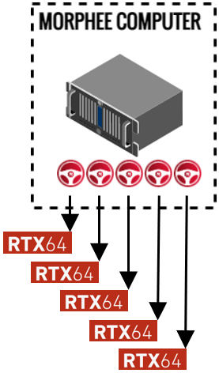

General concept
Contenu
General concept¶
Multi-Instance… What is it?¶
MORPHEE multi-instance makes it possible to run a dedicated number of instances, independent the one from the others, in parallel on one computer. Then, each MORPHEE becomes a complete automation system, with its own acquisition, its own test procedure, its own dashboard, and its own alarms.

In order to ensure cohabitation, some functions allow to exchange data between the different instances, facilitating measurement, events and equipment sharing.
To consolidate multi-instance, a new concept of real time load balancing has been developed, allowing to take advantage of existing computer multi-core architecture.
Multi-Instance… Key points¶
One MORPHEE master with X MORPHEE instances at the same time
Independent testing procedure
Independent alarms
Independent logging
Independent screens
Possibility to use different shared hardware by instance. For example, use of one CAN channels in one instance and another one in another instance.
Possibility to share channels values between instances through shared memory.
Possibility to share events between instances for global synchronization, for example stop all instances, or pause all instances.
Multi-Instance… References¶
Ref |
Description |
|---|---|
SA-M64-MULTI-04 |
Possibility to start 1 Master Instance + 4 test instances |
SA-M64-MULTI-08 |
Possibility to start 1 Master Instance + 8 test instances |
SA-M64-MULTI-16 |
Possibility to start 1 Master Instance + 16 test instances |
SA-M64-MULTI-24 |
Possibility to start 1 Master Instance + 24 test instances |
SA-M64-MULTI-32 |
Possibility to start 1 Master Instance + 32 test instances |
Multi-Instance… Limitation¶
Ref |
Master |
Instances |
|---|---|---|
Up to 1 + 8 instances |
1 kHz |
1 kHz |
Up to 1 + 16 instances |
500 Hz |
500 Hz |
Up to 1 + 32 instances |
100 Hz |
100 Hz |
[!NOTE] This limitations has been achieved with FEV 8 cores computer.